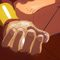

40 jours — 14
Fichiers conservés de la collection Metaflash.
Ouvrir l’imageFichiers conservés
40jours/14.jpg

Informations du fichier
- Nom conservé
- 030fbd9efd13e38242312a2d7bcc85a6b759e1b7e3dcd7b0d52fe8150ba8832c.jpg
- Taille
- 1,662 octets
- SHA-256
- 030fbd9efd13e38242312a2d7bcc85a6b759e1b7e3dcd7b0d52fe8150ba8832c
Provenance dans la sauvegarde Metaflash :
- 40jours/14.jpg (030fbd9efd13e38242312a2d7bcc85a6b759e1b7e3dcd7b0d52fe8150ba8832c)
40jours/14c.jpg


Informations du fichier
- Nom conservé
- 2f41ae7f8e9cdf74d9aa985991f183ee12517f1dc5db9e2773d639bb4a32cf13.jpg
- Taille
- 3,052 octets
- SHA-256
- 2f41ae7f8e9cdf74d9aa985991f183ee12517f1dc5db9e2773d639bb4a32cf13
Provenance dans la sauvegarde Metaflash :
- 40jours/14c.jpg (2f41ae7f8e9cdf74d9aa985991f183ee12517f1dc5db9e2773d639bb4a32cf13)
40jours/14d.jpg

Informations du fichier
- Nom conservé
- 7ec5b920e1673d80f2c97630618e30e5ba4477b2af16026135e7d8c002b90499.jpg
- Taille
- 2,612 octets
- SHA-256
- 7ec5b920e1673d80f2c97630618e30e5ba4477b2af16026135e7d8c002b90499
Provenance dans la sauvegarde Metaflash :
- 40jours/14d.jpg (7ec5b920e1673d80f2c97630618e30e5ba4477b2af16026135e7d8c002b90499)